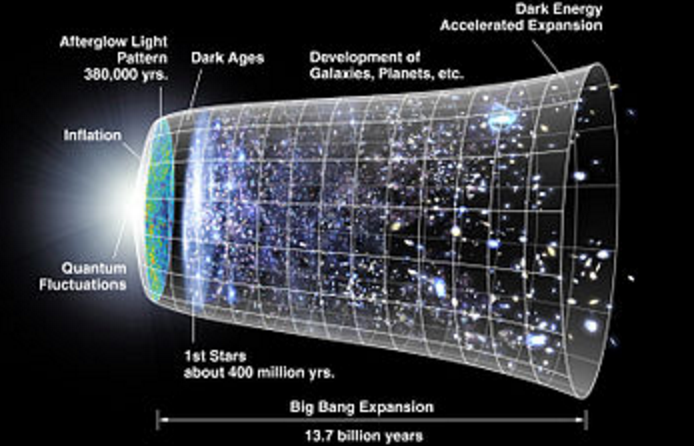
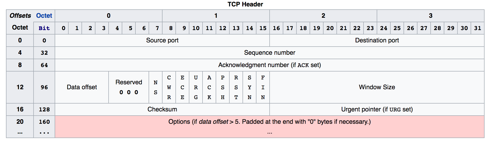

What is J-Gravity?
J-Gravity is a project based off of the Janus Cosmological Model established by Jean-Pierre Petit. This model states that there are two types of material (or matter) in the universe: Positive material and Negative material. Positive matter attracts other positive matter, negative matter attracts other negative matter, and positive matter and negative matter repel each other.

The project uses this property of particle interaction to design a simulation of a universe. An n-body amount of particles are calculated based on their gravitational pull with each other, then rendered to visualize the velocities of particles and their changes in space over time.
In particle physics, matter and antimatter exist throughout the entire universe. The collision of matter and antimatter releases a pair of gamma rays.
However, there is a problem. There is an imbalance between the two types of matter; antimatter is greatly outnumbered. Almost all of the universe is made up of regular matter. We know this because if two galaxies of each corresponding type of matter collided, the sheer number of particles colliding would send astronomical amounts of gamma rays deep into space–which has not been observed yet.
Thus, Petit theorized that if the antimatter was missing in this universe, then it must be in another one. To be precise, a twin universe. Below is a familiar image of the big bang, and the expansion of the universe following afterwards.

Petit proposed that the big bang caused time to flow in two different directions. This is how the model got its name, after the Roman God Janus who has two faces looking in both the future and past simultaneously.
Due to the immensity of the size of the project concerning moving millions of particle data sets around from team to team, the method of handling data between each team needs to be precise. The Maths and Physics encompassing most of the overall project needs to be as accurate as possible. The algorithms and implementations used are an attempt to combat the possible areas of data loss.
Algorithms
Barnes-Hut Algorithm
The main goal of the algorithms team was to find the most efficient way to compute all of the data sets constantly passs around. The algorithm used to divide the n-bodies is the Barnes-Hut Algorithm. There are fancy variants of it such as the Fast Multipole Method but essentially they all boil down to the same concept of considering small portions of space that hold multiple particles and treats them as one collective body to be calculated and makes approximations that hold as little error as possible.
Multipole Acceptance Criterion, which is a method to determine whether or not two cells inside an octree are able to be approximated within margins of error to treat the bodies inside a cell of an octree as one collective at its center of mass and gravitational pull, reducing the amount of calculations drastically..
Octrees
The Barnes-Hut algorithm uses an octree data structure. Octrees are often used to partition a three-dimensional space by recursively subdidving the space into eight octants. Other common areas of application are in patial indexing, searching for the nearest neighbors, and finite element analysis. To generate an octree, a method called morton ordering allows one to take a set of 3d points that is inside a 1-dimesional array and sorts them so that the points near each other on the 1-dimensional line are near each other in 3-dimensional space.

Morton Ordering
To generate an octree, a method called morton ordering allows one to take a set of 3d points that is inside a 1-dimesional array and sorts them so that the points near each other on the 1-dimensional line are near each other in 3-dimensional space. It is also commonly known as "z-ordering" due to the shape of its functionality. Below is four iterations of the Z-order curve.
LZ4 Compression
Simulating millions of particles is awesome, but handling the ginormous amount data is not. Each "star" has properties of position in x, y, and z, as well as mass in terms of floats. To be able to pass around huge sets of data, a lossless compression algorithm must be used in order to compress and decompress the data set without losing any precision on data, or else small losses in data spirals into more and more inaccurate inaccurate calculations with the progression of time.
LZ4 belongs to the LZ77 byte-oriented compressoin family and features:
- Fast compression and decompression
- Lossless data
- Bit manipulation
Networking
Parallel computing is the utilization of multiple processors accross a network in order to maximize calculation speed and efficiency. The head dispatcher
Data Management
Networking Destribution
Semaphores, Multithreading, and Mutexes
In computer architecture, multithreading is the ability of a central processing unit (CPU) or a single core in a multi-core processor to execute multiple processes or threads concurrently, appropriately supported by the operating system. In computer programming, a mutex (mutual exclusion object) is a program object that is created so that multiple program thread can take turns sharing the same resource, such as access to a file.
Transmission Control Protocol
TCP (Transmission Control Protocol) is a protocol that has appealing of features that made us choose it over just plain UDP. The features that made it attractive to us for this short term project were as follows, It guarantees that data is not lost in transmission, it guarantees that the data is not corrupted during transmission(in most cases), and it ensures that the data arrives in the same order that it was sent. It was also quick and easy to implement for such a short term project.
